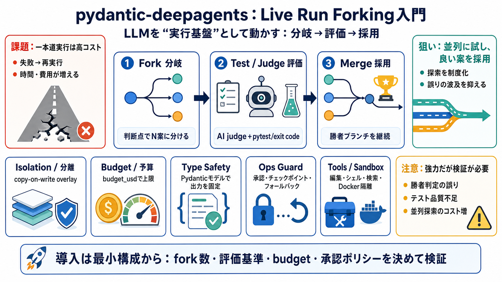

pydantic-deepagents/README.md at main · vstorm-co/pydantic-deepagents · GitHub
# Pydantic Deep Agents. Split one task into **N parallel branches**, let an AI judge merge the winner —. Pydantic Deep A…

pydantic-deepagentsは、LLMを自律エージェントとして動かすためのCLI/ライブラリで、 分岐して並列に試し、勝者を採用する実行戦略を中核にします。
自律エージェントは「この方針で進めて、失敗したらやり直す」になりがちで、 誤りのたびに時間・費用が跳ねます。
Live Run Forking（実行途中で分岐）は、同じタスクをNブランチに分けて進め、 AI judge/テストで勝者を決めて実行を続けます（Bilingual: 日本語/English）。
分岐した各ブランチは、copy-on-write的なファイルシステム分離と、 budget_usd（予算）上限などを持ち、失敗の波及を抑えます。
ブランチ並列で探索し、AI judgeやテストが勝者を示したら、 そのブランチを親の継続として「merge（採用）」します。
ツール呼び出し（ファイル編集/シェル実行/検索/ブラウザ自動化）や、 マルチエージェント、永続メモリ、Dockerサンドボックス等が用意されています。
生成結果をPydanticモデルで構造化し、型とバリデーションで想定外の出力崩れを抑える設計です。 （dictキー取りの代替：型で縛る）
勝者判定をAI judgeだけにせず、pytestの合否やexit codeなど客観指標で寄せやすいのが利点です。 これにより「誤マージ」を減らす方向に働きます。
単に会話するLLMではなく、チェックポイント、コスト追跡、フォールバック、ループ検出など “運用に必要な制御”を同一基盤にまとめるのが核です。
PRE/POSTのツール利用フックやdefault_security_hook()、ツール承認（承認/自動承認/拒否）で 破壊的コマンドをデフォルト抑制する方針が示されています。
READMEベースのため、分岐統合の整合性、隔離強度、評価基準の妥当性などは定量情報が不足しています。 探索並列は費用増のリスクもあるため、設計と実験で確認が必要です。
Live Run Forkingは「探索→評価→採用」を制度化し、型安全（Pydantic）と運用ガード（budget/承認/チェックポイント）で 実行を現実寄りにします。まずはあなたの用途でfork数・評価・承認戦略を最小構成で検証しましょう。
# Pydantic Deep Agents. Split one task into **N parallel branches**, let an AI judge merge the winner —. Pydantic Deep A…
# Pydantic Deep Agents vs LangChain Deep Agents: Which Python AI Agent Framework Should You Choose in 2026? Deep agents …
# Vstorm's pydantic-deep: Deep Agents for the Pydantic Ecosystem. And for teams already invested in the Pydantic ecosyst…
* Why use Pydantic Deep Agents? # Pydantic Deep Agents. *Build autonomous AI assistants in Python — file access, web sea…
# Pydantic-DeepAgents: A Lightweight, Production-Ready Framework for Building Autonomous AI Agents. *Inspired by LangCha…